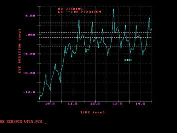

Original Ocular Motor
Analysis of the First Human with Achiasma: Documentation of Work Done in 1994
L.F.
Dell’Osso, Ph.D.
From the Daroff-Dell’Osso Ocular Motility Laboratory, Louis Stokes Cleveland DVA Medical Center and Depts. of Neurology and Biomedical Engineering, Case Western Reserve University, Cleveland OH, USA
OMLAB Report #090506
Written: 08/26/06*; Placed
on Web Page: 09/05/06; Last
Modified: 09/05/06
Downloaded from: OMLAB.ORG
Send questions, comments, and suggestions to: lfd@case.edu
*This work was done in 1994 solely by the author and
was supported by the Office of Research and Development, Medical Research
Service, Department of Veterans Affairs.
The purpose of this report is to place in the public domain the results
of the original ocular motility analysis of the first human diagnosed with
achiasma. The Figures presented herein were made in early 1994 by the author as
part of his analysis of the first accurate horizontal and vertical eye-movement
data made from a human with achiasma. They resurfaced during a recent move of
our Laboratory into its new space. Because the work was paid for with US
taxpayer money, with this publication, they are in the public domain, subject
to proper scientific citation. The author suggested this study in 1993 to one
of several co-investigators and designed and submitted the experimental
protocol that was followed. The color Figures in this paper are in the original
form in which they were generated on March 12 and 13, 1994 (although in a more
modern electronic format). Black and white versions of these 32 data Figures
plus 2 NFF and NAF analysis Figures were sent to a co-investigator on March 25,
1994 (receipt acknowledged in an email dated April 18, 1994); color slides of
the 32 data Figures were also brought to that person for the 1994 ARVO
presentation. They were part of confidential correspondence (1993 – 1994)
that served as the foundation for both the above oral presentation and one or
more joint publications that were to follow. That co-investigator had the responsibility for writing the
first draft of our paper but failed to do so despite repeated promises to our
coauthors and to the department head and director of the lab where the data
were taken. Instead, some of the confidential observations and conclusions
provided by this author were subsequently inserted into publications (along
with false and misleading statements) authored by that co-investigator without
my permission or citation of their source.
During the ensuing years, that co-investigator not only failed to
provide the promised draft to all the investigators involved in our study, but
also attempted to publish the results of my confidential analysis in at least
two Journals (Cortex and Vision Research) with either no mention or inadequate
citation of their source (this author) or of any of the above investigators.
Fortunately, two things occurred: 1) a diligent reviewer of Cortex was familiar
with the facts of the data’s origin and 2) another of our original
co-investigators found out that the submission to Vision Research listed him as
a co-author without his knowledge; he demanded his name be removed. The Editors
of both Journals were made aware of these facts and the true source of the data
analysis and rightly refused to publish the submitted data. Eventually, a
publication (coauthored by someone not associated with the original study) did
appear in a more obscure Journal with the involvement of its Editor, who failed
to acknowledge a written charge of plagiarism (including bowdlerized versions
of some of my original Figures) that was sent to him.
In the interest of complete disclosure and historical accuracy, the
original 32 data Figures and analysis are presented herein; they stand as
indisputable evidence of the work done a decade before the above publication by
individuals who had no role in either the analysis, interpretation, or display
of this original fixation data. Neither the persons responsible for the
behavior described above nor the resulting publication will be cited here, as
they are undeserving of citation in a scientific publication; ethical
scientists should not cite plagiarized papers. A historically accurate
description of the discovery of see-saw nystagmus (SSN) first in a canine model
of infantile nystagmus syndrome and later in this human has been published
elsewhere (1), as have some of the conclusions made in 1994 (2). In addition, other related publications have also
appeared which attempted to correct inaccurate statements that had been placed
in the literature (3-5).
METHODS
Protocol
Informed consent was given by the patient’s parents according to the
requirements in force in the Netherlands at the time. The subject was seated
with her head restrained by a bite bar ~5 ft from the visual displays. Fixed
LED targets, a projected smooth pursuit laser spot, or moving visual field were
used. The subject was instructed to look at (or follow) the target presented
or, in the case of the moving visual field, to look straight ahead. For
convergence targets, the subject was instructed to follow it as it approached
or receded. She was instructed to keep both eyes open when one was occluded.
Eye-Movement Recordings
Horizontal and vertical eye movements were recorded in the laboratory
of Dr. Han Collewijn using the magnetic scleral search coil method.
Analysis
Analysis and graphical presentations were originally done at the
Daroff-Dell’Osso Ocular Motility Laboratory (fka Ocular Motor Neurophysiology
Laboratory) in March of 1994, using ASYST and SigmaPlot software. Eye
velocities were obtained by digital (2-point, central-difference algorithm)
differentiation of the position signals. The author had previously developed
the use of phase planes, scan paths, and conjugacy plots for the evaluation of
nystagmus and the placement on the Figures of relevant foveal position and
velocity boundaries related to good visual acuity and nystagmus foveation
criteria.
RESULTS
The eye movements of this subject were videotaped prior to eye-movement
recording. Viewing, by Drs. LA Abel, J Shallo-Hoffmann, and LF Dell’Osso, of
the videotape shown at the 1993 ARVO meeting revealed a horizontal nystagmus
that was conjugate and a vertical see-saw component; I later confirmed the
see-saw nystagmus (SSN) by direct observation (1).
Eye Movements of the Achiasmic Subject
The following are descriptions of the 32 original eye-movement Figures
that were provided to the above co-investigator. Some of the Figures
deliberately contained redundant data to provide choices for different
presentation at both the 1994 ARVO talk and ensuing papers. At the time of this
work the term, “infantile nystagmus syndrome (INS)” was not yet in use and I
used the prior term, “congenital nystagmus (CN).”
Figures 1-20: Both Eyes Viewing in Primary Position
Figure 1. Right-eye horizontal (REH) fixation vs. time, including the
foveal radius ± the radius of the LED target and the ±2.5° region of the
foveation periods (shown dashed). The waveforms were jerk (J) and jerk with
extended foveation (Jef). The ±2.5° region was defined to allow
calculation of various foveation and acuity functions for the subject’s
variable-position foveation periods.
Figure 2. The same as Figure 1 but for the left eye horizontal (LEH).
It shows the conjugacy of the CN and the esotropia.
Figure 3. An Eye Position Conjugacy Plot (EPCP) that I developed to
demonstrate the conjugacy of the horizontal CN and disconjugacy of the vertical
SSN. The EPCP can also be used to derive the horizontal and vertical tropias
(or phorias, if one eye is covered). Thus, by superimposing the fovea (also
extended fovea and 2.5° “fovea”) on the EPCP (shown dashed), we can measure the
tropias (they are indicated on the plot).
Figure 4. Right eye vertical (REV) vs. time for the same interval as in
Figure 1 (with same foveal extents shown dashed). It shows the pendular nature
of the SSN.
Figure 5. Eye Position Scan Path (EPSP) showing horizontal and vertical
motion of the fixating RE for the same interval as Figure 1. Dotted plot allows
one to see that most of the time fixation was within the ±2.5° radius about the
foveal center.
Figure 6. Same as Figure 4 with both eyes shown to demonstrate the 180°
phase relationship between the vertical pendular nystagmus of the two eyes.
Figure 7. Phase Plane (PP) for REH during interval of Figure 1. The
±2.5° by ±4°/sec foveation window (FWIN) shown reversed-dashed. The rightward
foveating saccades bring the image within the FWIN. PP trajectories are always
clockwise.
Figure 8. Same as Figure 7 plus REV. The vertical nystagmus does not
adversely affect foveation.
Figure 9. Five seconds (1-5) of record of Figure 1 showing both position
(pos) and velocity (vel) of RE with a square-wave jerk (SWJ) superimposed on
the CN.
Figure 10. Five seconds (10-15) of record of Figure 1 showing both
position (pos) and velocity (vel) of RE with 3 square-wave jerks (SWJ)
superimposed on the CN.
Figure 11. Same viewing conditions as Figure 1 but with spontaneous
changes in fixating eye (RE to LE to RE), as shown. Jef and PPfs
waveforms in both the fixating and esotropic eyes.
Figure 12. EPCP of Figure 1 showing the horizontal and vertical tropias
under both fixation conditions.
Figure 13. REV and LEV during interval of Figure 11.
Figure 14. REH and LEH PP’s with FWIN dashed.

Figure 15. REH vs. time for transition from LE to RE fixation during
5-sec (10-15) interval of Figure 11 record. CN waveforms are PPfs.
Figure 16. EPSP of REH and LEH during interval of Figure 11. Shows that
LE is ET and HYPOT (RE fixation)
and RE is ET and HYPERT (LE fixation).
Figure 17. Same as Figure 8 with data within FWIN removed for clarity.
Figure 18. Same as Figure 14 with data within FWIN removed for clarity.
Figure 19. REH and LEH vs. time during NEAR and FAR fixation showing
the improvement of foveation periods (lower SDPOS) during convergence.

Figure 20. REH PP during 7-sec interval of Figure 19 with FWIN (±0.5°)
shown at both fixation positions (w/o data in FWIN). Shows how much better the
rightward (first NEAR fixation), and then leftward (second NEAR fixation),
foveating saccades during NEAR take the eye to the target than during FAR.
Figures 21-24: Right Eye Fixation in Primary Position
Figure 21. REH and LEH vs. time for RE fixation with LE, esotropic. Pfs
waveforms.
Figure 22. REH PP during interval of Figure 21. FWIN w/o data shown.
Figure 23. REH and REV PP’s during interval of Figure 21. FWIN w/o data
shown.
Figure 24. Horizontal and vertical EPCP’s for interval of Figure 21
showing LE phorias.
Figures 25-27: Left Eye Fixation in Primary Position
Figure 25. REH and LEH vs. time for LE fixation with RE, esotropic. Pfs
and PPfs waveforms.
Figure 26. LEH and LEV PP’s during interval of Figure 25. FWIN w/o data
shown.
Figure 27. Horizontal and vertical EPCP’s for interval of Figure 25
showing RE phorias.
Figures 28-30: Both Eyes Viewing at 15° Left Gaze
Figure 28. REH and LEH vs. time during RE fixation (LE, esotropic) in
left gaze (15°). Waveforms are J, Jef, and PC.
Figure 29. REH position (pos) and velocity (vel) during interval of
Figure 28.
Figure 30. REH and LEH position (pos) and RE velocity (vel) during
interval of Figure 28.
Figures 31 and 21: Both Eyes Viewing at 15° Right Gaze
Figure 31. REH and LEH vs. time during RE fixation (LE, esotropic) in
right gaze (15°). Waveforms are J, Jef, and PC.
Figure 32. REH PP during 5-sec (7.5 -12.5) interval of Figure 31. FWIN
is dashed and contains foveation-period “cusps.”
The NFF and NAF Functions at Different Gaze Angles
The results of my analysis using both the Nystagmus Foveation Function
(NFF) and Nystagmus Acuity Function (NAF) on the patient’s data and conclusions
drawn from that analysis were also sent to the above-described co-investigator
by this author via email in early 1994, prior to the ARVO meeting. The 2 NFF
and NAF analysis Figures below were sent with the 32 data Figures.
Figure 33. NFF vs. gaze angle (and at near) analysis during RE
fixation.
Figure 34. NAF vs. gaze angle (and at near) analysis during RE
fixation.
CONCLUSIONS
Based on the analysis of the above data, the following conclusions were
made by this author and transmitted (via email and verbally) to that
co-investigator (my prospective coauthor) prior to, during, and after the 1994
ARVO meeting:
1. The horizontal nystagmus was typical congenital nystagmus (CN).
2. The CN waveforms were pendular with foveating saccades,
pseudopendular with foveating saccades, jerk, jerk with extended foveation, and
pseudocycloid.
3. The CN amplitudes ranged from 0.5-10° and frequencies, from 2-4 Hz.
4. The CN was horizontally conjugate.
5. The subject was unable to maintain good foveation (i.e., within the
±0.5° foveal radius)
6. The nystagmus foveation function and nystagmus acuity function
calculations for the subject needed to be made using an expanded window
(±2.5°).
7. Convergence did not damp the CN appreciably but did increase the
length of the foveation periods.
8. The CN waveforms exhibited good foveation periods, consistent with
good visual acuity at
near.
9. The vertical nystagmus was see-saw nystagmus (SSN).
10. The SSN was pendular nystagmus with a 180°phase difference.
11. The SSN is related to the chiasmal defect in both dogs and humans.
12. The SSN amplitudes ranged from 0.5-6° and frequencies, from 1.3-1.6
Hz.
13. The subject had an alternating esotropia.
14. The alternating esotropia was 9.5° and hypo(er)tropias were 2.5°.
15. Both the CN and re-fixation saccades were conjugate.
16. Human achiasma precipitates both CN and SSN.
17. Conjugacy in human achiasma is distinguished from that in canines,
which may be due to the
less stringent requirements on alignment of an area centralis.
Removal of my original observations, analyses, and conclusions and the
bowdlerized copies of some of the original 32 data Figures from the
above-described publication leaves little of value and nothing new. This report
plus the publications it cites should put to rest any residual confusion
regarding either the first identification of SSN in, or the initial ocular
motility study of, the first achiasmic human; both followed my identification
of SSN in, and ocular motor analysis of, canine achiasma.
ACKNOWLEDGEMENTS
The author wishes to acknowledge the help of Dr. Hans van der Steen (who wrote some of the experimental paradigms), Dr. Aldo Ferraresi (who ran the experiments with the author and sent him the digitized data), and Dr. Han Collewijn (who invited this author to study this interesting patient in his Laboratory). The patient was originally seen elsewhere by Dr. P. Apkarian, who was also present during the experiments that produced this data but made no contributions this data analysis or presentation.
REFERENCES
1. Dell'Osso
LF. See-saw nystagmus in dogs and humans: An international, across-discipline,
serendipitous collaboration. Neurology 1996; 47:1372-4.
2. Dell'Osso LF,
Williams RW, Jacobs JB, Erchul DM. The congenital and see-saw nystagmus in the
prototypical achiasma of canines: comparison to the human achiasmatic prototype. Vision Res
1998; 38:1629-41.
3. Dell'Osso LF, Daroff
RB. Two additional scenarios for see-saw nystagmus: Achiasma and hemichiasma. J Neuro-Ophthalmol 1998; 18:112-3.
4. Dell'Osso LF, Hogan
D, Jacobs JB, Williams RW. Eye movements in canine hemichiasma: does human
hemichiasma exist? Neuro-ophthalmol
1999; 22:47-58.
5. Hertle RW, Dell'Osso
LF, FitzGibbon EJ, Caruso RC, Butman J, Mellow SD. Clinical, radiographic,
electrophysiologic findings in patients with achiasma or hypochiasma. Neuro-Ophthalmol 2002; 26:43-57.
Citation
Although the information contained in this paper and its
downloading are free, please acknowledge its source by citing the paper as
follows:
Dell’Osso, L.F.: Original Ocular Motor Analysis of the First Human with Achiasma: Documentation
of Work Done in 1994. OMLAB Report #090506, 1-21, 2006. http://www.omlab.org/Teaching/teaching.html